OPC 的一天：如何用 WorkBuddy × ima 形成专属团队
本章为进阶教程，如需了解基础操作方式，请前往 WorkBuddy × ima 功能指引 和 如何用 WorkBuddy 把 ima 知识库越用越厚。
一个人经营一家公司，经常不是工作不会做，而是事情太多：
- 既要关注行业变化，又要服务客户；
- 既要判断方案方向，又要亲自制作文件。
本篇以一位为中小企业提供品牌与内容增长服务的独立咨询顾问为例，看看他如何在一天的工作中，通过 WorkBuddy × ima 提升效率。
这套流程并非所有 OPC 的固定模板。你可以根据自己的业务，更换其中的行业、专家角色等，探索属于自己的工作流。
本教程中使用的案例信息，已经过 AI 二次处理。
一、早上：行业变化和客户消息一起涌来
一天还没正式开始，新的行业动态、竞品消息和客户邮件已经堆了起来。
与其花一上午逐条搜索和阅读，不如先让 WorkBuddy 完成第一轮整理。
让行业情报定时找上门
在 WorkBuddy 中创建自动化任务，搜索最近的行业变化和重点竞品动态，并整理成带有来源链接的简报。
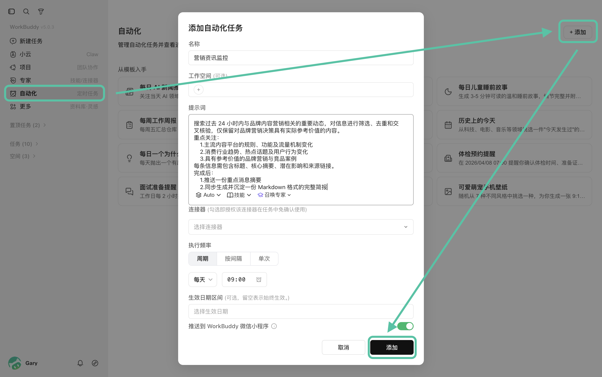
早上打开 WorkBuddy 时，你可以直接阅读已经生成的简报。
也可以勾选图中的"推送到 WorkBuddy 微信小程序"，在手机小程序中查收简报。
生成的内容，可以在 WorkBuddy 中一键保存回 ima，逐渐形成自己的行业情报库。
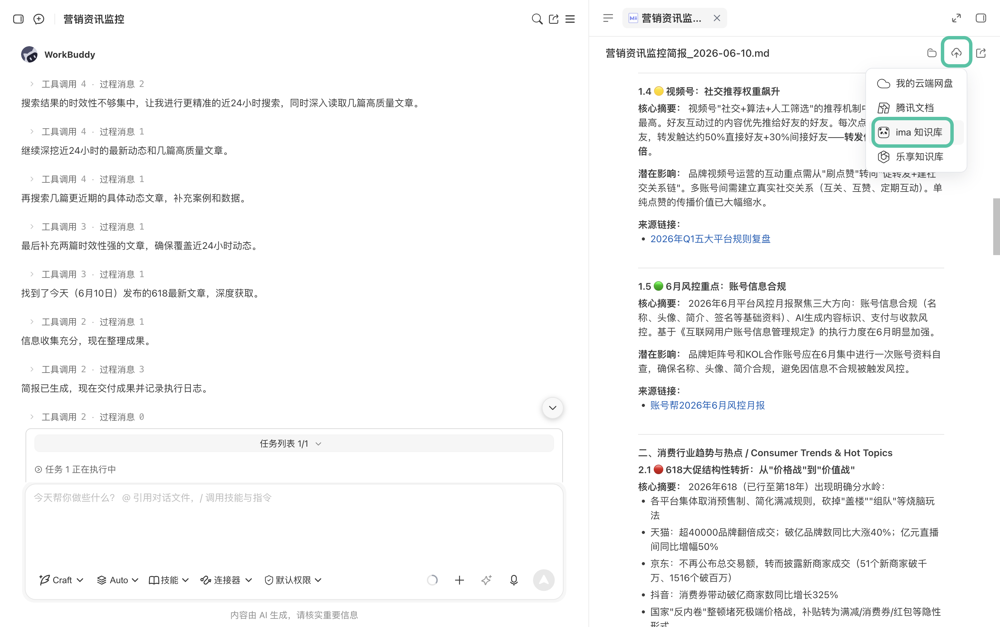
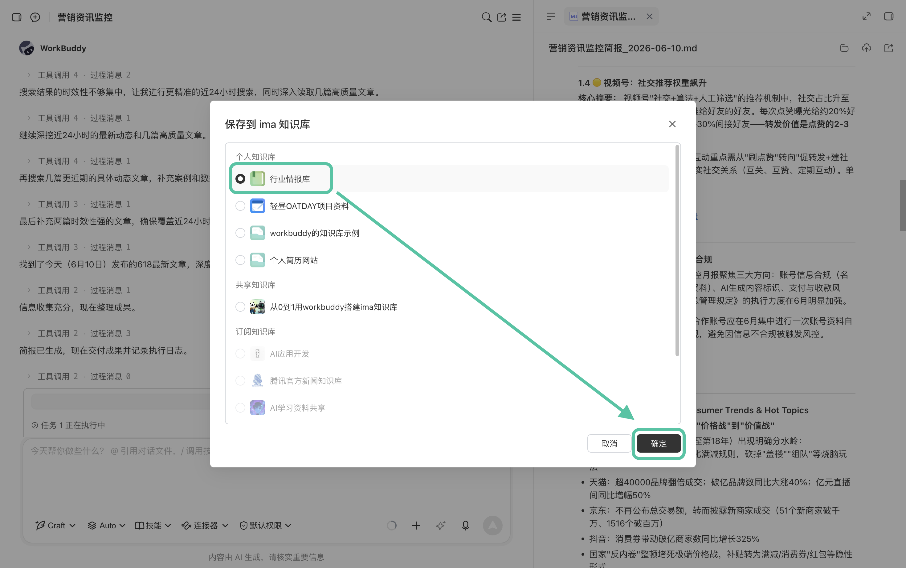
汇总客户消息
看完简报后，再通过连接器读取 QQ 中的客户邮件、飞书中的沟通信息。让 WorkBuddy 汇总新消息，找出需要立即处理的事项，并生成今天的工作优先级。
请读取昨日至现在，QQ 邮箱中的新增邮件、飞书中的消息。重点标出需要立即回复、可能影响项目进度的内容，并按优先级生成今日待办。
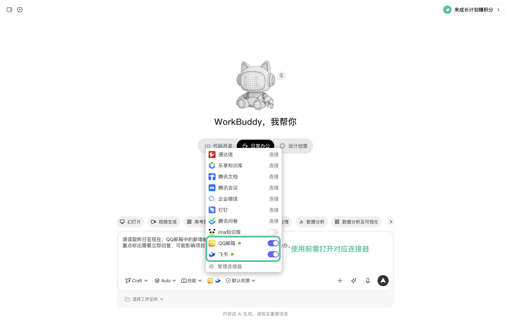
这样，早上得到的不再是一堆待读信息，而是一份可以直接执行的工作安排。
二、上午：客户提出新需求，先把变化说清楚
上午的会议中，客户临时调整了项目方向：不仅要修改内容策略，还增加了新的交付要求。
对于 OPC 来说，最危险的不是需求变化，而是还没弄清变化，就直接开始修改方案。
因此，对会议细节的梳理和记录就显得尤为重要。
这时，可以通过腾讯会议连接器，将会议记录导入 WorkBuddy。
WorkBuddy 会把散落在会议中的讨论整理成结构清晰的需求记录。
请根据腾讯会议中"新昼 OATDAY 需求修改"这一会议的记录，整理客户的新需求、已确认事项、待确认问题和后续行动。只使用会议中明确提到的信息，不要自行补充。
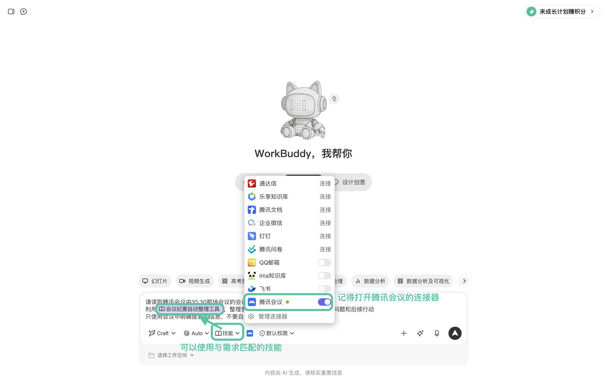
确认无误后，可以将其保存回对应的 ima 知识库，作为后续工作的最新依据。
三、下午：召集专属团队，重新制作并交付
客户确认新方向后，需要在有限时间内重新评估方案、修改报价并完成交付。
这部分可以用一句话概括：ima 提供历史知识，WorkBuddy 负责专业分析并生成交付文件。
先从 ima 找回项目资料
修改方案前，先让 WorkBuddy 调用 ima 中的客户背景、历史报价、原始方案和上午保存的会议记录，对比新旧需求。
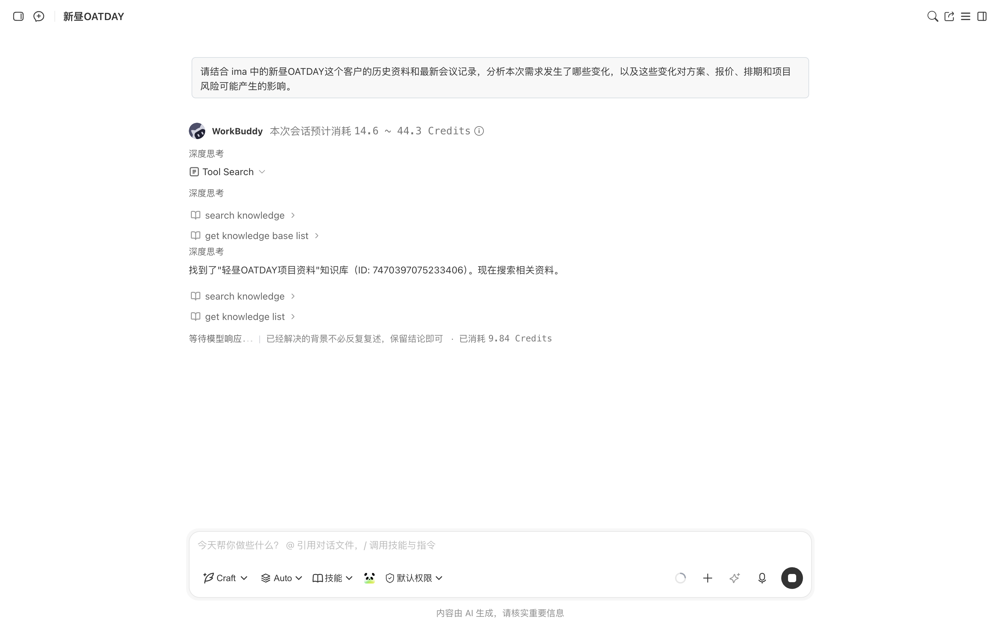
过去需要在文件夹、聊天记录和文档中反复查找的信息，现在可以被集中调用。
能让你快速判断，哪些是原有范围内的修改，哪些属于新增需求。
让专家团共同分析
明确需求变化后，在专家市场中选择适合的预置专家团。
对于品牌与内容增长项目，可以召唤"营销战役团队"，向团长说明客户背景、最新需求和预期成果。
不需要自己挑选团员或拆分任务，团长会自动拆解任务，安排负责内容、活动、SEO 和品牌分析的成员协作，最后汇总交付完整方案。
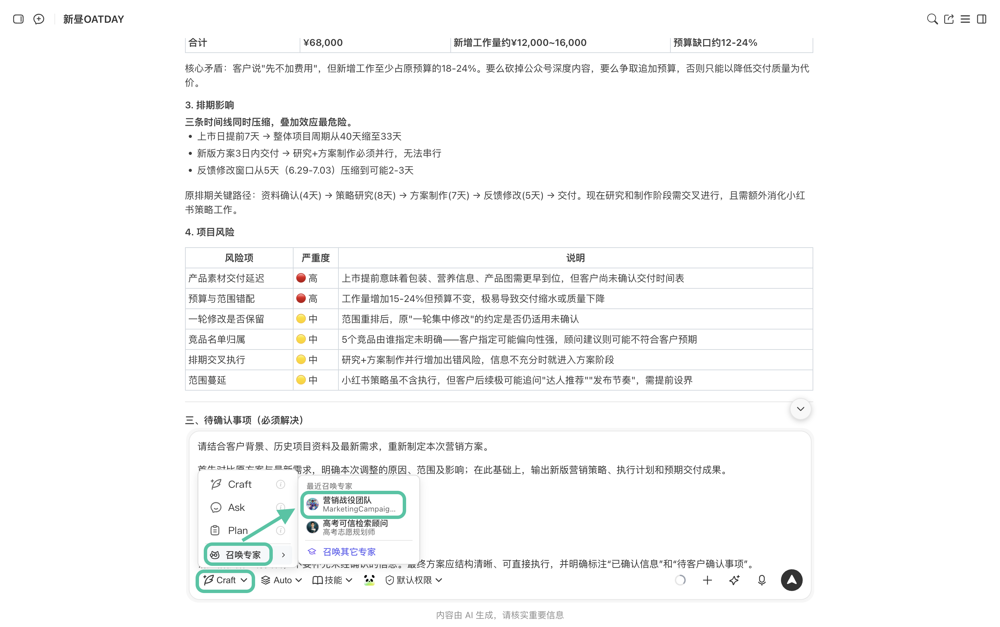
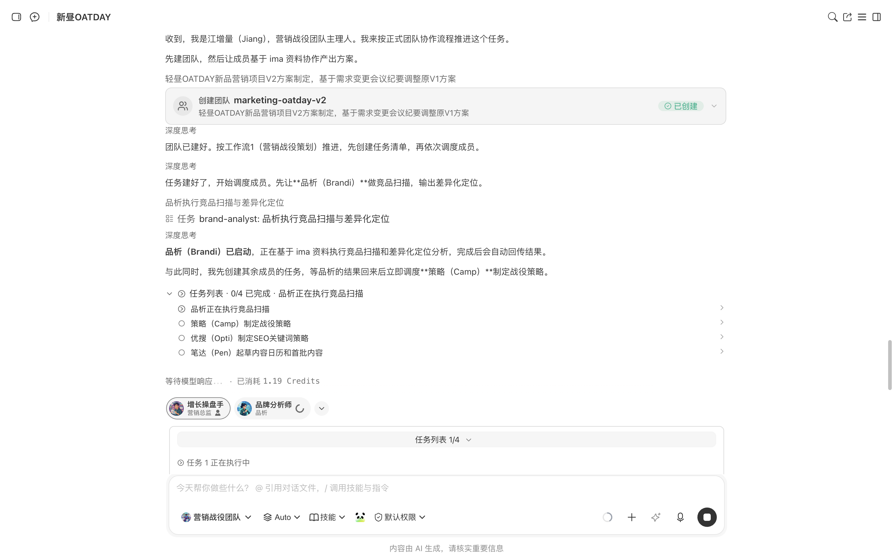
审核与分享产物
专家团完成任务后，可以先检查产物。如需修改，直接通过对话补充要求并调整。
如需分享给他人，可以直接在 WorkBuddy 中进行产物分享。
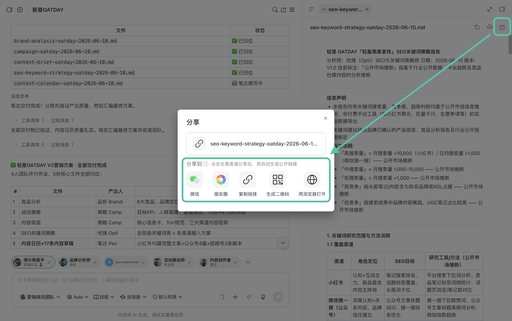
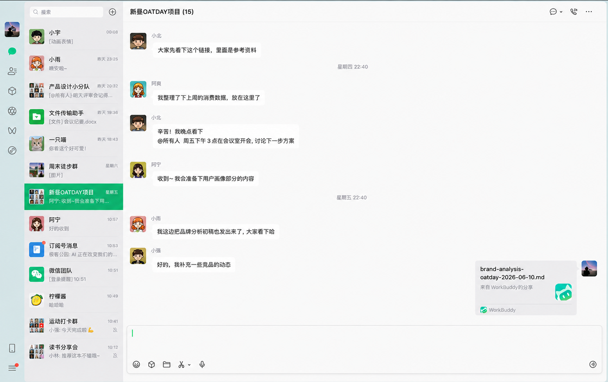
四、晚上：做一次真正有用的复盘
交付完成不代表工作真正结束。
如果不及时整理，今天积累的判断、模板和经验很快就会散落在文件和聊天记录中。下一次遇到类似项目，依然要从头摸索。
晚上，可以让 WorkBuddy 根据当天的会议纪要、方案调整和最终交付文件完成复盘：
请复盘今天的项目过程，重点总结有效做法、出现的问题、可以复用的方案模块，以及下次处理类似需求时应该提前确认的事项。内容整理为复盘报告，形成 docx 形式的文档。
最终把复盘报告保存回 ima。这样，今天的工作成果就会成为下一个项目的参考。
五、一个人经营，也可以形成团队工作方式
回顾这一天，完整流程是：
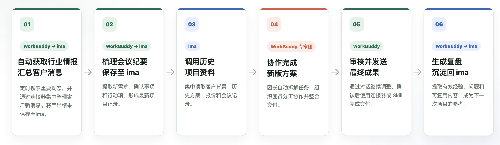
WorkBuddy × ima 的价值，并不是替 OPC 做所有决定，而是帮助其减少重复搜索、重复解释和机械制作文件的时间。
你仍然负责客户关系、创意和关键判断，但不必再独自承担每一项具体工作。
六、补充：客户隐私怎么处理？
WorkBuddy 非常重视用户个人信息的保护，将按照法律法规规定，保护您的个人信息安全，详请可参见下方链接：
必要时先进行脱敏处理，例如删除姓名、手机号、合同金额、内部账号、未公开经营数据等信息，再进行整理和调用。